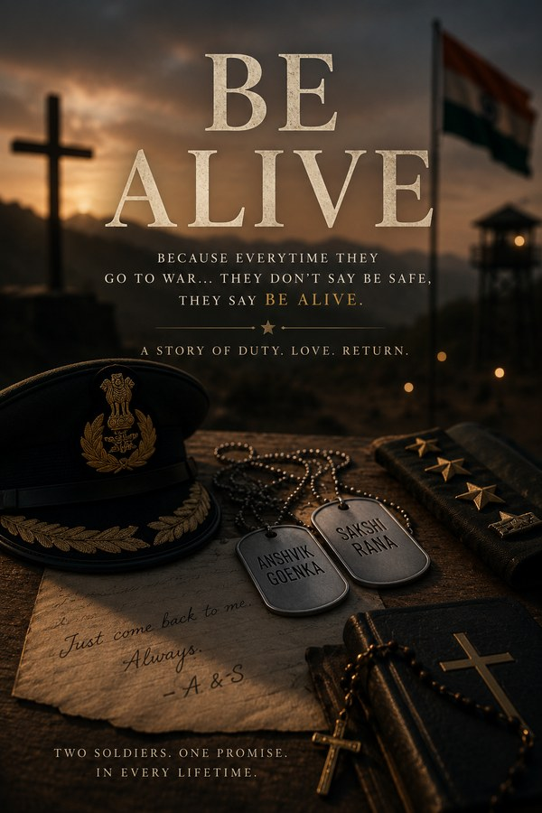

Be Alive
Safe is a luxury. Alive is a prayer.
Military romance · Literary fiction · Slow burn. An Indian Army border posting and Delhi
Read on WattpadEvery time we leave, we don’t say be safe. We say be alive. Because safe is a luxury we stopped believing in a long time ago. But alive — alive is a prayer. Alive is a promise. Alive is the only thing we ever asked of each other.
Some love stories begin with a glance across a crowded room. This one begins with a salute.
Colonel Sakshi Rana has never needed anyone to define her. Daughter of two of Delhi’s finest lawyers, raised in a home where fighting for something meant everything, she chose the border over the boardroom, the rifle over the comfortable life handed to her, and has never once looked back. Decorated archer. Medal winner. A woman who walks into every room with the quiet certainty of someone who earned every inch of the ground she stands on.
Lieutenant Colonel Anshvik Goenka, Anshu to everyone who knows him, is not what you expect when you picture a man who commands soldiers. Soft-spoken off the field, almost startlingly so. Shy in the way that has nothing to do with weakness and everything to do with depth. From one of Delhi’s most prominent business families, he could have inherited an empire. He chose a uniform instead. On the field, he is calm, commanding, the kind of officer his soldiers would follow anywhere without being asked twice.
When Sakshi arrives at Anshu’s border posting for a new mission, neither of them is looking for anything. They are soldiers. They have a job to do. Except, she outranks him. She is his commanding officer. And from the moment he sees her, Anshu knows he is in serious, irreversible trouble. He doesn’t say anything, of course. That would require a version of courage that has nothing to do with battlefields.
And Sakshi notices him too. Not immediately, but slowly, the way the most important things always happen. Through the work. Through the late nights and difficult missions and conversations that run longer than either of them planned. Through the way he shows up, quietly, without announcement, every single time.
Be Alive is the story of two soldiers, equal in everything that matters, complicated by everything around them, finding each other in the place where most people only find duty. About what love looks like when both people carrying it also carry a gun. About the specific terror of wanting someone to come home when home is the border and coming back is never guaranteed. No melodrama. No villains. No cinematic declarations in the rain. Just two people, a closed door, a chain with a name on it, and the two words they say every time one of them walks into the unknown.
Be alive.
Meet them
- Colonel Sakshi Rana. Elegant, precise, quietly tender. Doesn’t fall easily, but when she falls, she falls with her whole self.
- Lt. Col. Anshvik “Anshu” Goenka. Quiet in the way rivers are quiet: still on the surface, everything happening underneath.
- Karan & Naina Goenka. Warmth wrapped in wit. A family that says be safe when it means please come back to us.
- Raghav & Priya Rana. Two lawyers who argue for a living and adore their daughter beyond argument.
For every woman who ever wanted to wear the uniform, not just admire it. For every soldier who ever loved someone and still walked into the unknown. For everyone who has ever said be alive, and meant every word.